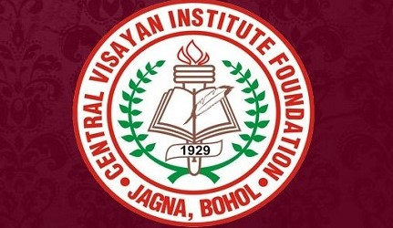

Scientists teaching and building STEM capacity worldwide
Science Corps is a 501(c)(3) nonprofit organization that places recent PhD graduates in STEM (Science, Technology, Engineering, and Mathematics) at partner institutions in underserved areas around the world. Our fellows teach courses, design hands-on scientific curricula, host workshops, and run experiments that give students direct experience with science.
Founded in 2018, Science Corps has supported fellowships in the Philippines, India, Mexico, Denmark, and beyond. By pairing world-class scientists with communities that lack access to advanced science education, we aim to build lasting scientific capacity and inspire the next generation of STEM professionals worldwide.
Fellows leverage their expertise to support local schools and research projects. Beyond teaching, they become mentors, role models, and bridges between local students and the global scientific community.
Our partner institutions provide fellows with a home base for their scientific and educational work.
CVIF is one of our primary host sites. Located in Jagna, Bohol in the Central Visayas region of the Philippines, CVIF has welcomed multiple Science Corps fellows who have taught Research Methods, Physics, and other STEM subjects to high school students. The institute is known for its dynamic learning environment and commitment to scientific education. Fellows have participated in the annual Jagna International Workshop, a gathering of scientists, educators, and students from across the region.
Aavishkaar is a science education center based in Palampur, Himachal Pradesh, India (aavishkaar-palampur.org). Science Corps fellows have collaborated with Aavishkaar to develop classroom demonstrations, teacher training programs, and hands-on science activities for students in the region. Notable projects include DNA extraction demonstrations using household materials, designed to bring cutting-edge biology concepts into rural classrooms.
Science Corps has also supported fellowships in Mexico, Denmark, and other countries. If you are interested in becoming a host institution, please contact us.
The people who make Science Corps possible.
Chloe is a co-founder of Science Corps and leads the organization's programs and partnerships. She holds a degree from UC Berkeley and brings expertise in science education and nonprofit management.
Ben is a co-founder of Science Corps with a background in molecular biology. He has interviewed leading scientists including Nobel Prize winner Jennifer Doudna and has been instrumental in shaping the organization's scientific vision.
Riya supports Science Corps fellows throughout their placements, helping coordinate logistics, communications, and educational programming across our partner sites worldwide.
[TODO: fill in] — Additional team members and board information to be added.
We are grateful to the institutions and organizations that make Science Corps fellowships possible.

Central Visayan Institute Foundation
Bohol, Philippines
Aavishkaar
Palampur, India
[TODO: fill in] Additional Partners
Partner information to be updated